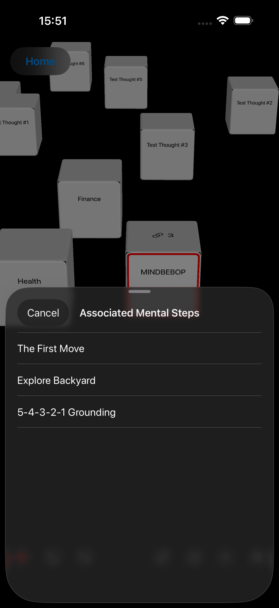

생각이 머물 자리를 가질 수 있고, 가능한 경로는 그대로 열어 둘 수 있으며, 그 생각에서 어디론가 나아갈지 — 그리고 언제 나아갈지 — 당신이 결정하는 공간입니다.
다른 일을 하는 동안에도 생각은 Mental Background를 떠다닐 수 있습니다.
어떤 생각은 지나갑니다.
어떤 생각은 계속 돌아옵니다.
때로는 생각과의 관계를 바꾸는 것만으로 충분할 수 있습니다.
다르게 바라볼 수도 있습니다.
잠시 내려놓을 수도 있습니다.
주의를 덜 줄 수도 있습니다.
경계를 만들 수도 있습니다.
또는 주의가 다른 곳으로 움직일 수 있게 해줄 수도 있습니다.
생각이 잦아들 수도 있습니다.
하지만 때로는 그대로 남아 있습니다.
생각 공간은 생각을 해결하거나, 정리하거나, 할 일로 바꾸지 않아도 그 생각이 존재할 수 있는 자리를 제공합니다.
그리고 언젠가 그 생각에서 출발해 가고 싶은 곳이 있다는 것을 발견한다면, 그곳에서 하나의 경로가 시작될 수 있습니다.
생각은 목적지를 갖기 전에
먼저 자리를 가질 수 있습니다.


MINDBEBOP의 많은 부분은 말로 표현할 수 있는 생각에서 시작됩니다.
한 문장.
걱정.
떠올려야 할 것.
아이디어.
자신에게 계속 되풀이해서 하는 말.
주의가 다른 곳에 있어야 할 때 나타나는 생각.
이러한 언어적 생각들은 MINDBEBOP이 Mental Background라고 부르는 곳을 떠다닐 수 있습니다.
MINDBEBOP은 Mental Background에 있는 모든 생각이 중요하다고 가정하지 않습니다.
또한 반복해서 돌아오는 모든 생각이 의미 없는 잡음이라고 가정하지도 않습니다.
생각마다 필요한 관계는 다를 수 있습니다.
어떤 생각은 Thought Noise처럼 작용할 수 있습니다.
반복될 수 있습니다.
끼어들 수 있습니다.
실제 중요성보다 더 크게 느껴질 수도 있습니다.
또는 지금 당장 그냥 내버려 두기가 어려울 수도 있습니다.
MINDBEBOP의 여러 도구는 그러한 생각과의 관계를 바꾸는 서로 다른 방법을 제공합니다.
MindFlipOut
반복해서 돌아오는 생각을 다르게 바라봅니다.
MindShoutOut
지금 계속 안고 있을 필요가 없는 생각을 잠시 내려놓습니다.
MindZoneOut
과부하된 마음에 조용한 순간을 줍니다.
MindBackOut
선택한 앱과 어느 정도 거리를 만듭니다.
MindBackyard
주의가 움직일 수 있는 공간을 줍니다.
때로는 관계를 이렇게 바꾸는 것만으로 충분할 수 있습니다.
생각이 잦아듭니다.
더 이상 아무것도 하지 않아도 됩니다.
하지만 때로는 생각이 남아 있습니다.
그리고 여기에서 MINDBEBOP이 탐색하기 시작한 질문이 생깁니다.
생각과의 관계를 바꾸는 것만으로 충분하지 않다면,
때로는 그 생각에서 출발해 우리가 가고 싶은 곳이 여전히 있을 수 있을까요?
이것은 하나의 가설입니다.
MINDBEBOP은 모든 지속적인 생각 안에 숨겨진 목표나 목적지가 있다고 가정하지 않습니다.
생각 공간은 그것을 알아볼 수 있는 장소를 제공합니다.
Mental Shelving은 어떤 것을 당장의 주의 속에 계속 두지 않아도 되도록 의식적으로 마음속에서 잠시 내려놓는 행위입니다.
그 생각이 반드시 해결된 것은 아닙니다.
반드시 잊힌 것도 아닙니다.
나중에 다시 돌아올 수 있도록 남겨 두면서, 지금은 그 생각에서 벗어나 있어도 된다고 스스로에게 허용하는 것입니다.
생각 공간은 이 행위를 공간적인 것으로 만듭니다.
생각
↓
Thought Block
↓
생각 공간에 자리를 줍니다
↓
그곳에 둡니다
↓
원할 때 돌아옵니다
우리는 이것을 Spatial Mental Shelving이라고 부릅니다.
여기서 “shelving”은 물리적이거나 그래픽으로 표현된 선반을 뜻하지 않습니다.
어떤 것을 마음속에서 잠시 내려놓는 행위를 뜻합니다.
생각 공간은 그 행위에 공간 속의 눈에 보이고 지속되는 자리를 제공합니다.
Thought Block은 그 공간 어딘가에 그저 존재할 수 있습니다.
선반 모양의 물체는 필요하지 않습니다.
카테고리도 필요하지 않습니다.
우선순위도 필요하지 않습니다.
마감일도 필요하지 않습니다.
행동도 필요하지 않습니다.
생각에 자리를 주세요.
잃어버리지 않으면서
잠시 내려놓으세요.
대부분의 디지털 시스템은 생각을 정보로 바꿉니다.
생각
↓
텍스트
↓
목록 항목
생각 공간은 또 다른 표현 방식을 탐색합니다.
생각
↓
Thought Block
↓
자리
Thought Block은 생각에 공간 속에서 지속되는 시각적 존재감을 줍니다.
움직일 수 있습니다.
그 주변을 움직일 수 있습니다.
회전시킬 수 있습니다.
크기를 바꿀 수 있습니다.
가까이 다가갈 수 있습니다.
더 멀리 떨어질 수 있습니다.
어딘가에 그대로 둘 수 있습니다.
나중에 다시 올 수 있습니다.
아니면 그냥 내버려 둘 수도 있습니다.
생각을 본다고 해서 반드시 그 생각을 다뤄야 하는 것은 아닙니다.
다음 두 가지 사이에는 차이가 있습니다.
이걸 계속 기억하고 있어야 해.
그리고:
그게 어디 있는지 알아.
Spatial Mental Shelving은 생각에 지속되는 자리를 주는 것이 두 번째 감각을 만드는 데 도움이 될 수 있는지 탐색합니다.
생각은 계속 접근 가능한 상태로 남아 있습니다.
하지만 접근 가능하다는 것이 계속 전면에 두어야 한다는 뜻은 아닙니다.
대부분의 소프트웨어는 정보를 당신의 주의 앞으로 가져옵니다.
이것을 보세요.
이것을 기억하세요.
이것에 반응하세요.
다음에는 이것을 하세요.
생각 공간은 이 관계를 뒤집을 수 있습니다.
Thought Block은 그 자리에 그대로 있을 수 있습니다.
그것에 다가갈지는 당신이 결정합니다.
생각이 나를 방해하는 것이 아닙니다.
내가 그 생각에 다가가기로 선택하는 것입니다.
그곳에 도달해 잠시 그 생각과 함께 있을 수도 있습니다.
움직일 수도 있습니다.
그 생각에 대해 새로운 무언가를 발견할 수도 있습니다.
또는 돌아서서 그대로 그곳에 둘 수도 있습니다.
다가갈지 결정하는 것은 당신입니다.
대부분의 정보 시스템은 입력한 것을 곧바로 분류하라고 요구합니다.
어떤 카테고리?
어떤 프로젝트?
우선순위는?
언제까지?
생각 공간은 더 기본적인 질문에서 시작할 수 있습니다.
이걸 어디에 두고 싶지?
그것만으로 충분할 수 있습니다.
배치는 정리보다 먼저 올 수 있습니다.
또는 정리가 전혀 필요하지 않을 수도 있습니다.
목록은 보통 순서, 라벨, 카테고리를 통해 관계를 표현합니다.
공간은 배치를 통해 관계를 표현할 수 있습니다.
한 생각은 가까이에 둘 수 있습니다.
다른 생각은 더 멀리 둘 수 있습니다.
두 생각을 서로 가까이 둘 수도 있습니다.
어떤 것은 계속 바로 눈앞에 둘 수 있습니다.
다른 것은 좀처럼 마주치지 않을 곳에 둘 수 있습니다.
생각 공간은 이러한 위치에 보편적인 의미를 부여할 필요가 없습니다.
가깝다고 해서 더 중요해야 하는 것은 아닙니다.
멀다고 해서 덜 중요해야 하는 것도 아닙니다.
작다고 해서 덜 의미 있는 것도 아닙니다.
특정한 회전 방향이 특정 종류의 생각을 의미할 필요도 없습니다.
배치는 그저 당신이 그 생각들이 주변에 어떤 방식으로 존재하기를 원하는지를 반영할 수 있습니다.
마음속에 무엇이 있는지 항상 정식으로 검토할 필요는 없습니다.
때로는 생각 공간을 움직이다가 생각과 마주칠 수 있습니다.
아, 이게 아직 여기 있네.
지금은 이게 다르게 보이네.
이 두 가지가 연결되어 있을지도 모르겠네.
아직도 이건 다루고 싶지 않네.
어쩌면 여기서 가고 싶은 곳이 있을지도 모르겠네.
그리고 계속 움직이면 됩니다.
마주치는 모든 것을 처리해야 할 필요는 없습니다.
생각 공간은 생각을 확인하는 일을 받은편지함을 검토하는 것보다는 하나의 환경 속에서 무언가와 마주치는 것처럼 느껴지게 할 수 있습니다.
생각 공간은 당신이 가진 모든 생각을 담기 위한 것이 아닙니다.
마음 전체를 공간적으로 재구성한 것도 아닙니다.
생각은 그냥 지나갈 수 있습니다.
다른 MINDBEBOP 상호작용만으로 충분할 수도 있습니다.
또는 어떤 생각을 나중에 의도적으로 다시 마주할 수 있는 곳에 남겨 두고 싶다고 결정할 수도 있습니다.
그 결정은 당신의 것입니다.
MINDBEBOP은 어떤 생각이 생각 공간에 속한다고 자동으로 결정하지 않습니다.
생각 공간은 당신이 원할 때 생각을 둘 수 있는 곳입니다.
Thought Block은 목표와 같은 것이 아닙니다.
그리고 멘탈 목적지와도 같은 것이 아닙니다.
다음과 같은 이름의 Thought Block을 생각해 보세요.
가족
가족은 목적지가 아닙니다.
하지만 그곳에서 서로 다른 가능한 방향이 나타날 수 있습니다.
가족
↙ ↓ ↘
방해받지 않고 함께 보내는 시간을 늘리기
재정적으로 좀 더 여유를 만들기
집에서 좀 더 인내심을 갖기
이러한 방향들은 동시에 존재할 수 있습니다.
서로 다른 시기에 중요해질 수 있습니다.
서로 다른 시간 규모에서 작용할 수 있습니다.
결국 서로 다른 멘탈 목적지로 이어질 수도 있습니다.
또는 전혀 멘탈 내비게이션이 되지 않을 수도 있습니다.
따라서 Thought Block에 하나의 고정된 벡터가 필요하지는 않습니다.
Thought Block은 여러 방향이 가능해지는
출발점이 될 수 있습니다.
생각 공간은 이미 생각과 함께 가능한 경로를 유지할 수 있는 구체적인 방법을 제공합니다.
Thought Block은 MindEntry에 저장된 Mental Steps와 연결할 수 있습니다.
하나의 Thought Block에 하나의 Mental Steps 세트를 연결할 수 있습니다.
또는 여러 개를 연결할 수 있습니다.
Thought Block
↓
Mental Steps
Mental Steps
Mental Steps
Mental Steps가 연결되어 있으면 작은 링크 표시가 Thought Block 위에 직접 나타납니다.
숫자는 연결되어 있는 Mental Steps가 몇 개인지 보여 줍니다.
표시를 탭하면 그 생각과 연결된 Mental Steps를 볼 수 있습니다.
하나를 선택하면 MindEntry가 그것을 열고, 그곳에서 해당 Mental Steps를 시작할 수 있습니다.
생각과 마주하기
↓
가능한 경로 보기
↓
원할 때 하나 선택하기
↓
MindEntry에서 Mental Steps 시작하기
Thought Block은 여전히 그 생각입니다.
연결된 Mental Steps는 여전히 가능한 경로입니다.
그중 하나를 선택해 갈지는 여전히 당신이 결정합니다.
Mental Steps를 Thought Block에 연결한다고 해서 그 생각이 할 일로 바뀌는 것은 아닙니다.
Mental Steps는 자동으로 시작되지 않습니다.
연결된 하나의 경로가 주된 경로가 되어야 하는 것도 아닙니다.
여러 경로를 동시에 가능한 상태로 남겨 둘 수 있습니다.
그리고 그중 어느 것도 따라갈 필요가 없습니다.
이 생각은 여기에 있습니다.
여기서 갈 수 있는 곳들이 있습니다.
지금 당장 어디에도 갈 필요는 없습니다.


이 차이는 중요합니다.
생각 공간은 당신의 삶을 보고 이렇게 말하는 시스템이 되어서는 안 됩니다.
목표 7개.
단계 23개.
이미 했어야 할 일 3개.
그렇게 되면 가능성이 압박으로 바뀝니다.
생각 공간은 그 반대의 가능성을 탐색합니다.
경로는 가능한 상태로 남아 있을 수 있습니다.
요구가 되지 않으면서도.
때로는 Thought Block에 다가가면서 무언가를 바꾸고 싶다는 것을 깨닫게 됩니다.
여기에서 가고 싶은 곳이 있습니다.
가능한 방향이 이제 의도적으로 선택한 방향이 될 수 있습니다.
이미 Thought Block에 Mental Steps가 연결되어 있을 수도 있습니다.
그 경로 중 하나가 맞는다면 Thought Block에서 직접 열어 MindEntry에서 계속할 수 있습니다.
또는 기존 경로 중 어느 것도 지금 가고 싶은 곳에 맞지 않는다는 것을 발견할 수도 있습니다.
중요한 변화는 Thought Block이 할 일이 되었다는 것이 아닙니다.
당신이 방향을 선택했다는 것입니다.
생각
↓
가능한 방향
↓
선택한 방향
↓
멘탈 목적지
↓
멘탈 내비게이션
MindEntry는 내비게이션 레이어를 제공합니다.
Mental Steps를 통해 멘탈 목적지를 향해 움직일 수 있습니다.
다음 움직임을 취합니다.
그 후 자신이 어디에 있는지 봅니다.
경로를 바꿉니다.
멘탈 목적지를 바꿉니다.
또는 새로운 현재 위치에서 계속합니다.
이 차이는 중요합니다.
멘탈 내비게이션은 멘탈 목적지를 향한 의도적인 움직임을 포함합니다.
현재 위치
↓
Mental Steps
↓
멘탈 목적지
생각 공간에는 그 어느 것도 필수가 아닙니다.
멘탈 목적지 없이 들어갈 수 있습니다.
어디에도 도착하려 하지 않고 움직일 수 있습니다.
내비게이션을 시작하지 않고 Thought Block을 바라볼 수 있습니다.
Mental Steps를 연결해 두고도 시작하지 않을 수 있습니다.
여러 가능한 방향을 보고도 아무것도 선택하지 않을 수 있습니다.
생각 공간은 가능성을 담아 둘 수 있습니다.
그 가능성이 내비게이션이 되기 전에.
MindBackyard에는 주의와 서로 다른 관계를 맺을 수 있는 여러 공간이 있습니다.
Infinite Hallway에는 생각해야 할 것이 거의 없습니다.
움직이세요.
거닐어 보세요.
주의가 느슨해지도록 두세요.
생각 공간에서는 자신의 마음에서 나온 것들이 환경 안에 존재할 수 있습니다.
움직이세요.
알아차리세요.
다가가세요.
방향을 바꿔 보세요.
지나가세요.
어느 공간에도 목적지는 필요하지 않습니다.
Infinite Hallway는 멘탈 내비게이션의 일부가 될 수도 있습니다.
Mental Step이 잠시 당신을 그곳으로 보낸 뒤, 계속할 준비가 되었을 때 같은 활성 Mental Step으로 다시 돌아오게 할 수 있습니다.
따라서 생각 공간과 Infinite Hallway가 같은 환경이 될 필요는 없습니다.
더 큰 MINDBEBOP 시스템 안에서 서로 다른 역할을 할 수 있습니다.
이것은 생각 공간에서 가장 중요한 원칙 중 하나일 수 있습니다.
Thought Block을 본다고 해서 행동이 필요한 것은 아닙니다.
Thought Block을 움직인다고 해서 그것을 정리하고 있다는 뜻도 아닙니다.
Mental Steps를 연결한다고 해서 시작해야 하는 것도 아닙니다.
가능한 방향을 본다고 해서 그것이 멘탈 목적지가 되어야 하는 것도 아닙니다.
Thought Block은 빨간 배지나 미완료 항목, 또는 공간을 비우라는 요구가 되어서는 안 됩니다.
그저 존재할 수 있습니다.
이것은 여기에 있습니다.
그것만으로 충분할 수 있습니다.
생각 공간은 시각적인 할 일 관리자가 되기 위한 것이 아닙니다.
To Do, Doing, Done 열이 필요하지 않습니다.
생산성 점수도 필요하지 않습니다.
연속 기록도 필요하지 않습니다.
공간을 채웠다고 보상할 필요도 없습니다.
공간을 비웠다고 보상할 필요도 없습니다.
모든 생각을 일로 바꿀 필요도 없습니다.
그리고 가능한 모든 멘탈 내비게이션을 의무로 바꿀 필요도 없습니다.
가능성은 압박이 아닙니다.
생각 공간은 여유로운 공간으로 남아 있어야 합니다.
빈 영역은 낭비된 화면 공간이 아닙니다.
그 자체가 경험의 일부입니다.
Thought Block이 항상 바로 눈앞에 있을 필요는 없습니다.
가능한 경로가 항상 드러나 있을 필요도 없습니다.
환경이 끊임없이 당신의 주의를 차지하려 해서는 안 됩니다.
생각 주변의 공간은
생각 그 자체만큼
중요할 수 있습니다.
공간적인 환경 때문에 자신의 생각을 찾기 어려워져서는 안 됩니다.
거닐고 싶을 때 거니는 것은 유용할 수 있습니다.
하지만 이미 무엇을 원하는지 알고 있을 때까지 반드시 거닐어야 하는 것은 아닙니다.
탐색은 공간적일 수 있습니다.
찾기는 계속 쉬워야 합니다.
생각 공간은 관리해야 하는 미로가 되어서는 안 됩니다.
생각 공간은 나갈 때마다 초기화될 필요가 없습니다.
Thought Block은 당신이 둔 곳에 그대로 남아 있을 수 있습니다.
Mental Steps도 계속 연결된 상태로 남아 있을 수 있습니다.
하지만 그 생각들과의 관계까지 그대로 남아 있어야 하는 것은 아닙니다.
예전에는 이것이 가깝게 느껴졌습니다.
지금은 이것과 조금 더 거리를 두고 싶습니다.
예전에는 여기서 한 방향밖에 보이지 않았습니다.
지금은 여러 방향이 보입니다.
예전에는 이것에 행동이 필요하다고 생각했습니다.
지금은 그냥 내버려 두어도 괜찮습니다.
Thought Block에 적힌 말은 바뀌지 않았을 수도 있습니다.
바뀐 것은 그 생각과 마주하는 방식일 수 있습니다.
대부분의 앱은 정보의 최신 버전을 보존합니다.
생각 공간은 조금 더 조용한 무언가를 남길 수도 있습니다.
무엇이 가까이에 남았는지.
무엇이 멀어졌는지.
무엇이 그대로 남았는지.
무엇으로 다시 돌아왔는지.
무엇이 다르게 보이기 시작했는지.
며칠, 몇 주 또는 몇 달 뒤에 돌아와 공간이 다르게 느껴진다는 것을 알아차릴 수 있습니다.
앱이 점수를 계산했기 때문이 아닙니다.
대시보드가 당신이 나아졌다고 말했기 때문도 아닙니다.
당신이 직접 그 차이를 알아보기 때문입니다.
이것과의 관계가 달라졌습니다.
이러한 변화에는 완료된 멘탈 내비게이션이 필요하지 않습니다.
때로는 무언가를 움직이거나, 그대로 두거나, 다르게 마주하는 것만으로 충분할 수 있습니다.
생각 공간은 당신이 가진 모든 생각을 시각화하기 위한 것이 아닙니다.
3D 마인드맵이 아닙니다.
모든 연관성을 드러낼 필요가 없습니다.
모든 것을 다른 모든 것과 연결할 필요도 없습니다.
때로는 덜 보는 것이 더 유용할 수 있습니다.
Thought Block은 모든 관계를 드러내지 않고도 존재할 수 있습니다.
가능한 방향은 탐색되지 않은 채 남을 수 있습니다.
생각은 홀로 남아 있을 수 있습니다.
생각 공간은 마음의 구조를 재구성하기보다는 그 안에 있는 것과 의도적인 관계를 맺을 수 있는 방법을 제공하는 데 더 관심이 있습니다.
생각 공간은 모든 움직임을 기록하거나 당신의 정신적 삶을 과거 기록 데이터베이스로 만들 필요가 없습니다.
Thought Block을 몇 번 움직였는지 보여 주는 차트가 필요하지 않습니다.
얼마나 많은 공간을 비웠는지에 대한 점수도 필요하지 않습니다.
그 가치는 훨씬 더 조용할 수 있습니다.
익숙한 공간으로 돌아와 스스로 무언가를 알아차립니다.
무언가가 더 이상 예전에 있던 곳에 있지 않습니다.
한때 가까이 두었던 것이 이제 더 멀리 있습니다.
예전에는 즉시 다가가던 것이 이제는 그 자리에 그대로 있어도 괜찮습니다.
그 알아차림은 분석 시스템이 아니라 당신의 것이 될 수 있습니다.
Spatial Mental Shelving과 Thought Block과 Mental Steps 사이의 연결은 이미 생각에 자리를 주고 가능한 경로를 함께 유지할 수 있게 합니다.
이러한 아이디어를 사용하다 보면 더 큰 질문이 생깁니다.
생각이 자리를 가질 수 있다면,
그 생각과 마주하는 방식을 또 무엇이 바꿀 수 있을까요?
이 질문은 Thought Furniture로 이어집니다.
Thought Furniture는 생각 공간 안에서 생각과 특정한 방식으로 상호작용할 수 있게 하는 구조에 대한 실험적인 아이디어입니다.
Spatial Mental Shelving의 다른 이름이 아닙니다.
Spatial Mental Shelving은 생각에 자리를 줍니다.
Thought Furniture는 어떤 구조가 그 생각과 마주하는 방식을 바꿀 때 어떤 일이 생길 수 있는지를 묻습니다.
A라는 Thought Block을 상상해 보세요.
서로 다른 Thought Furniture는 매우 다른 상호작용을 만들어 낼 수 있습니다.
A → A를 바라보는 또 다른 방식
A → 가능한 방향
A → 더 작은 부분들
A + B → 새롭게 보이는 무언가
ABC → CBA
A → 잠시 시야 밖으로
A → Mental Steps
A → ?
Thought Furniture는 무언가를 드러낼 수도 있습니다.
감출 수도 있습니다.
필터링할 수도 있습니다.
분리할 수도 있습니다.
결합할 수도 있습니다.
방향을 바꿀 수도 있습니다.
변형할 수도 있습니다.
또는 가능한 방향을 더 쉽게 알아차릴 수 있게 할 수도 있습니다.
중요한 것은 Furniture가 어떻게 생겼는지가 아닙니다.
중요한 것은 그 상호작용이 생각과 어떤 관계를 가능하게 하는가입니다.
Thought Furniture는 장식이 아닙니다.
생각과의 관계를 디자인하는 실험입니다.
Thought Furniture의 가장 흥미로운 가능성 중 하나는 관점입니다.
Thought Block 자체는 바뀔 필요가 없을 수도 있습니다.
바뀌는 것은 그것과 마주하는 방식일 수 있습니다.
같은 생각.
다른 관점.
다른 것들이 보이기 시작합니다.
다른 관점은 이전에는 보기 어려웠던 가능한 방향을 드러낼 수 있습니다.
기존의 멘탈 목적지가 다르게 보이게 할 수도 있습니다.
또 다른 멘탈 목적지를 드러낼 수도 있습니다.
또는 내비게이션 자체가 필요하지 않다는 것을 보여 줄 수도 있습니다.
Thought Furniture는 어떤 해석이 옳은지 결정해서는 안 됩니다.
당신이 바라볼 수 있는 또 하나의 위치를 만들어 주어야 합니다.
Thought Orientation은 MINDBEBOP이 탐색하고 있는 또 하나의 아이디어입니다.
때로는 계속 나아가기 위해 목적지를 바꿔야 할 수도 있습니다.
때로는 계속 움직일 수 있도록 목적지를 더 작게 만드는 것이 도움이 될 수 있습니다.
하지만 Thought Orientation은 다른 질문을 던집니다.
Point B를 바로 바꾸지 않고,
그것을 바라보는 방식을 바꾸면 어떻게 될까요?
돌려 봅니다.
예상하지 못한 곳에서 바라봅니다.
무엇이 떠오르는지 봅니다.
우리는 아직 특정한 방향이 무엇을 의미해야 하는지 알지 못합니다.
고정된 정의가 필요하지 않을 수도 있습니다.
생각 공간은 이 아이디어를 물리적인 방식으로 실험할 수 있는 장소를 제공합니다.
관점은 답이 아닙니다.
변형은 명령이 아닙니다.
Thought Furniture가 Thought Block을 보고 그것이 무엇을 의미하는지 선언해서는 안 됩니다.
당신의 멘탈 목적지를 결정해서도 안 됩니다.
모든 생각을 자동으로 Mental Steps로 바꾸어서도 안 됩니다.
대신 당신이 스스로 무언가를 알아차릴 수 있는 조건을 만들 수 있습니다.
이것과 마주하는 또 다른 방법이 있습니다.
여기에서는 무엇이 보이나요?
해석은 여전히 당신의 것입니다.
멘탈 내비게이션은 결국 멘탈 목적지에 도달할 수 있습니다.
하지만 도착했다고 해서 원래의 Thought Block이 반드시 사라져야 하는 것은 아닙니다.
Thought Block은 애초에 목적지와 같은 것이 아니었습니다.
나중에 그곳에서 또 다른 가능한 방향이 나타날 수도 있습니다.
그리고 내비게이션을 거치는 과정이 원래 생각과 마주하는 방식을 바꿀 수도 있습니다.
생각
↓
멘탈 내비게이션
↓
도착
↓
어쩌면 이제 그 생각이 다르게 보일지도 모릅니다
Point B에 도달한다고 해서 그 생각을 영원히 끝난 것으로 선언해야 하는 것은 아닙니다.
MindAnchor는 성공적인 멘탈 내비게이션을 통해 도달한 상태에서 무언가를 선택적으로 남겨 둘 수 있습니다.
여기서 또 하나의 질문이 생깁니다.
한 번의 성공적인 내비게이션에서 앵커한 무언가가
다른 내비게이션이 시작되는 관점을 바꿀 수 있을까요?
어쩌면 성공적인 내비게이션은 하나의 멘탈 목적지에 도달하는 것 이상의 일을 할 수도 있습니다.
그곳에서 경험한 것이 나중에 다른 생각, 다른 가능한 방향 또는 다른 Point B가 어떻게 보이는지에 영향을 줄 수도 있습니다.
관점
↓
멘탈 내비게이션
↓
도착
↓
MindAnchor
↓
미래의 관점?
MINDBEBOP은 이것이 사실이라고 가정하지 않습니다.
우리가 탐색해 보고 싶은 것입니다.
이러한 실험들을 함께 보면 MINDBEBOP을 위한 더 큰 구조의 가능성이 나타납니다.
언어적 생각이 Mental Background에 나타납니다.
↓
관계를 바꾸는 것만으로 충분할 수 있습니다.
↓
때로는 생각이 남습니다.
↓
생각 공간에 자리를 줍니다.
↓
서로 다른 관점에서 마주합니다.
↓
가능한 방향이 보이기 시작할 수 있습니다.
↓
가고 싶은 곳이 있을 때 멘탈 목적지를 선택합니다.
↓
내비게이션합니다.
↓
도착합니다.
↓
도착한 곳에서 무언가를 앵커합니다.
↓
다음에는 무엇이 다르게 보이는지 봅니다.
이것은 마음이 작동하는 방식에 대한 규칙이 아닙니다.
MINDBEBOP이 탐색하고 있는 하나의 모델입니다.
어떤 생각은 훨씬 더 일찍 잦아들 수 있습니다.
어떤 생각은 내비게이션이 되지 않은 채 생각 공간에 머물 수 있습니다.
어떤 생각에서는 여러 가능한 방향이 나올 수 있습니다.
어떤 생각은 어딘가로 이어졌다가 나중에 또 다른 곳으로 이어질 수도 있습니다.
시스템이 그중 무엇이 일어나야 하는지 결정할 필요는 없습니다.
생각 공간은 하나의 단순한 질문에서 시작되었습니다.
생각을 잠시 내려놓는 행위가
공간적인 것이 되면 어떻게 될까요?
이제 그 실험은 더 커지고 있습니다.
우리는 이렇게 물어볼 수 있습니다.
생각에 자리를 주면 그것을 계속 기억하고 있어야 한다는 필요가 달라질까요?
생각이 나를 방해하는 것과 내가 그 생각에 다가가는 것은 다르게 느껴질까요?
관계의 작은 변화만으로 어떤 생각들이 잦아들까요?
어떤 생각들이 남을까요?
남아 있는 생각 중 일부에는 가능한 방향이 있는 것처럼 느껴질까요?
하나의 Thought Block이 여러 가능한 경로를 가지면서도 그중 어느 것도 따라야 한다는 압박을 만들지 않을 수 있을까요?
관점을 바꾸면 이전에는 분명하지 않았던 방향이 보일 수 있을까요?
멘탈 목적지에 도달하는 것이 나중에 원래 생각과 마주하는 방식을 바꿀까요?
한 번의 성공적인 내비게이션에서 앵커한 무언가가 다른 내비게이션을 바라보는 방식에 영향을 줄 수 있을까요?
우리는 답을 미리 알 필요가 없습니다.
생각 공간은 그것을 알아볼 수 있는 장소를 제공합니다.
생각에 자리를 주세요.
행동을 요구하지 않은 채 그곳에 머물게 하세요.
가능한 경로를 의무로 만들지 않으면서 열어 두세요.
다른 관점이 도움이 될 수 있을 때 관점을 바꿔 보세요.
가고 싶은 곳이 있을 때 내비게이션하세요.
그리고 도착한 곳이 다음에 볼 수 있는 것을 바꾸는지 살펴보세요.
생각 공간은 MINDBEBOP Mental Background OS의 일부로 MindBackyard를 통해 탐색되고 있습니다.
Copyright © 2026 MINDBEBOP — All rights reserved.